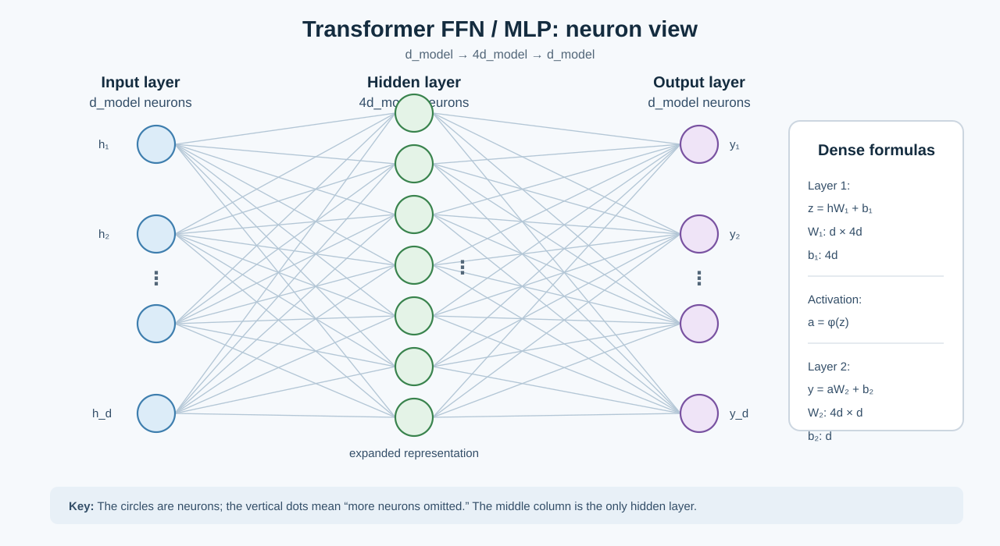

Transformer FFN / MLP
FFN is a one-hidden-layer MLP: d_model → 4d_model → d_model. The expanded 4d_model representation is the hidden layer.

Exam sentence (English): A Transformer FFN is a one-hidden-layer MLP. It expands each token representation from
中文：Transformer 的 FFN 是一个单隐藏层 MLP：先扩展、激活、再压回原维度；两个 dense layer 都有 weights 和 biases。
d_model to 4d_model, applies a nonlinear activation, and projects it back to d_model. Each dense layer has weights and biases.中文：Transformer 的 FFN 是一个单隐藏层 MLP：先扩展、激活、再压回原维度；两个 dense layer 都有 weights 和 biases。
Source: files-from-teacher/BagOfQuestions/BagOfQuestions-session-3-ag.md and the highest-priority scope record.